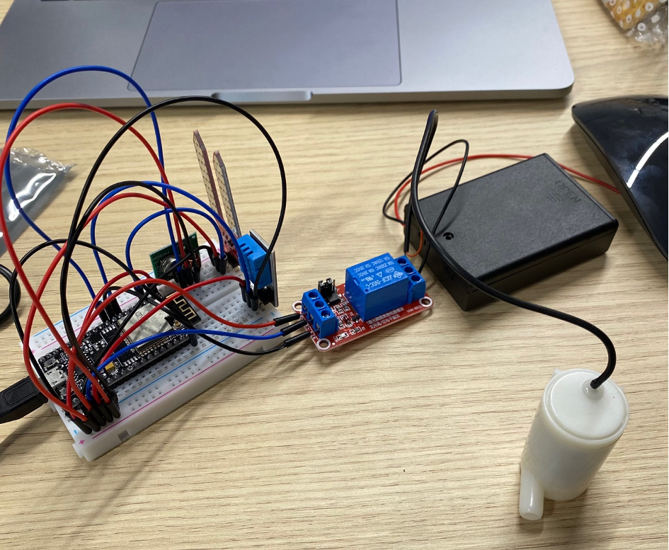
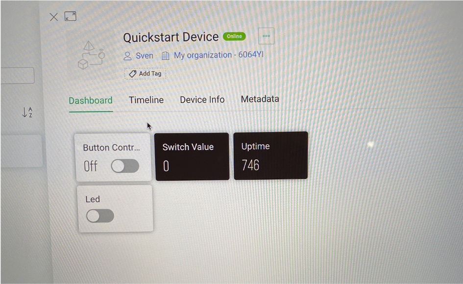

Week 3 & 4
In deze twee weken lag de focus op het afbouwen van de opstelling en vooral op het programmeren van de software en het werkende krijgen van het Blynk Dashboard.
Week 3 : Smartphone Dashboard
In deze week ben ik vooral bezig geweest met het opnieuw indelen van mijn verbindingen. Nu heb ik namelijk alle + en – connecties naar de buitenkant van mijn breadboard geleid zodat hier alle andere connecties ook op aangesloten konden worden en er zo minder een wirwar aan draden ontstaat. Dit kostte nogal wat werk, daarna ben ik verder gegaan met het regelen van de bijbehorende software maar werd het voor mij wel moeilijker en moeilijker, met wat hulp kreeg ik het uiteindelijk wel voldoende werkend.
Week 4 : Automating the system and using the Blynk API
In deze week stond het verder automatiseren van het systeem en het verbinden van het systeem met Blynk centraal. Vanaf dit punt werd het voor mij allemaal erg lastig aangezien ik vanaf nu de code ook echt zelf moest gaan schrijven en vormen i.p.v. het kopiëren en goed positioneren van verschillende codes, zoals in de voorbijgaande weken ging. Met wat gestruggle, hulp van Rob en gedoe is het me toch gelukt om het systeem werkende te krijgen in Blynk, zoals te zien is in de onderstaande afbeelding:
